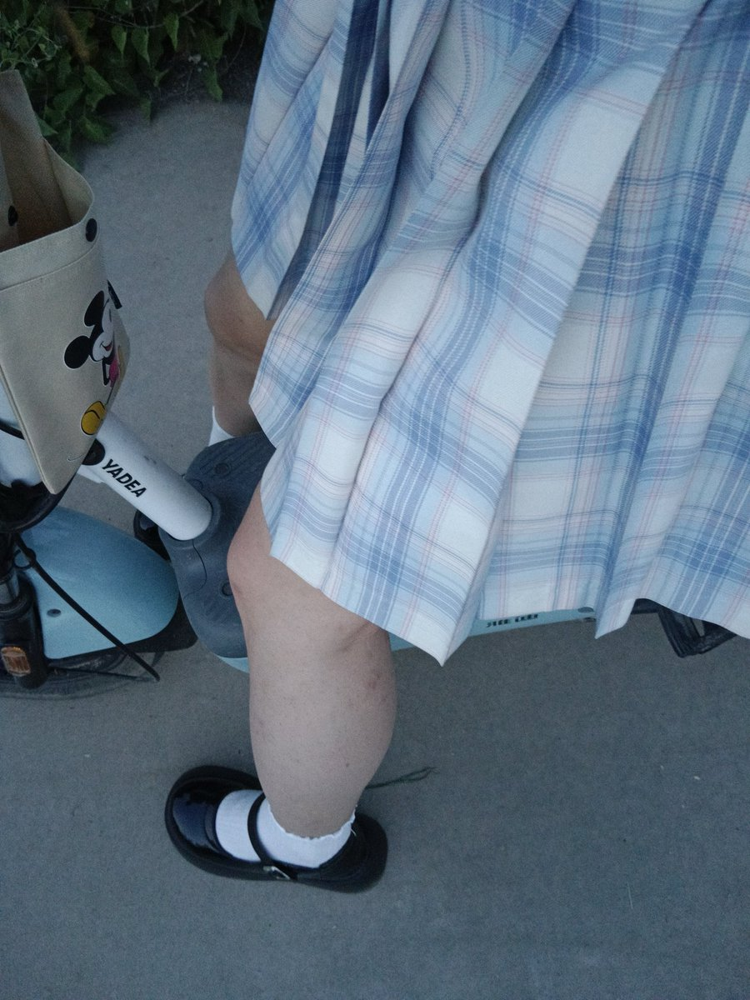

🧊沫柠好惨喵～🍋🍥
@Moningmeng
RT @XRParas: 高考完的那个暑假 有着美好的分数 憧憬的学校 美美的装扮即便多么呆呆笨笨也开心呢 夏天梨园的软风吹过裙摆 蓝调天空 没有压力 没有抑郁 没有焦虑 没有成年的烦恼 那是我最美的少女回忆

笙予楠（Parasomnia）
@XRParas
高考完的那个暑假 有着美好的分数 憧憬的学校 美美的装扮即便多么呆呆笨笨也开心呢 夏天梨园的软风吹过裙摆 蓝调天空 没有压力 没有抑郁 没有焦虑 没有成年的烦恼 那是我最美的少女回忆 https://t.co/ZPllmKbIDS